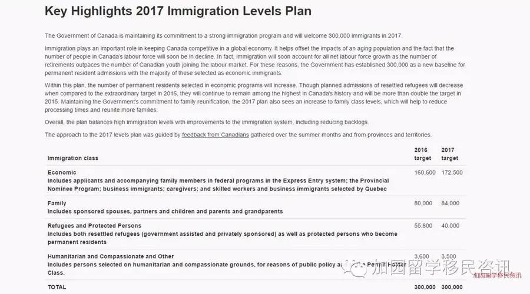
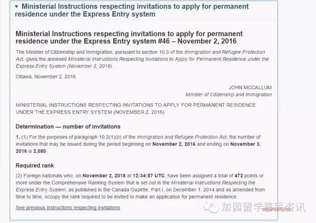

曼省，EOI / 2016年11月17日
加拿大曼尼托巴省位于加拿大中部，是三大草原省份之一，也一直是加拿大最好移民的省份之一。
曼省为了满足本省的经济发展需要，设置了自己的省提名移民项目。拿到省提名的申请人，再递交材料给联邦，等上9-12个月就可以拿到绿卡了。
曼省的省提名分三种：
- MPNP for Skilled Workers-in Monitoba 在本省工作的省提名
- MPNP for Skilled Workers-overseas 海外直接递交的省提名
- MPNP for Business 商业投资移民
现在重点说说在本省工作的省提名，也是和广大申请人最密切相关也是最容易走的通的一条移民之路。
通过在本省工作的省提名需要满足一些什么条件呢？
阅读更多
曼省省提名EOI第22次抽选分数654，邀请人数150人
曼省，EOI / 2016年11月28日
曼省省提名EOI第22次抽选分数654，邀请人数150人。
MPNP under the Expression of Interest System – Draw #22 – October 28, 2016 **The October 28, 2016 draw for Skilled Worker Overseas included only those were who directly invited by the MPNP under a Strategic Recruitment Initiative
2017年加拿大移民配额
加拿大，移民 / 2016年11月30日
加拿大2017年移民配额公布，将欢迎30万移民移民加拿大，移民总人数与2016年持平。但经济类移民从2016年的160,600增加到了2017年的172,500名，增加了11,900名。家庭团聚类移民增加了4,000名，达到了84,000名。减少了15,800名难民移民配额，但难民名额仍然有40,000名。

联邦Express Entry第46次抽选分数
EE / 2016年12月11日
2016年11月2日Express Entry第46次邀请，分数线为472分，邀请人数为2080人。

EE / 2016年12月12日
SPP计划全称为Student Partners Program（中加国际学生合作计划），是一项为前往加拿大公立学院协会成员院校的学生在北京签证办公室设立的特别申请渠道计划，于2010年7月16日起正式在中国实施。
阅读更多